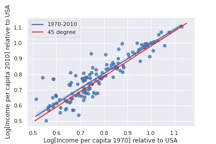

2 Le Modèle UGT
2.1 Introduction
Un des principaux objectifs de l’économie dès le début a été compréhension des différences économiques entre pays et régions du monde dans le long terme. Suffit de lire le titre du plus célèbre ouvrage d’Adam Smith: “Recherches sur la nature et les causes de la richesse des nations”. Dès nos jours, l’écart entre pays est assez large : la différence de PIB par tête entre le pays le plus développé (Hong-Kong, États-Unis) et le moins développé (Burundi) montre un ratio de 127:1. Même dans un seul continent, on voit différences assez larges : Trinité-et-Tobago a un PIB par tête 31 fois plus grand qu’Haïti; Macao 170 plus qu’Afghanistan; Monaco 51 fois plus qu’Ukraine.
Pour améliorer notre compréhension sur ce sujet, différents modèles illustrent certains aspects liés à la croissance économique et ses causes. Ainsi, on propose comme raisons de croissance économique les suivantes:
- Accumulation des facteurs de production :
- Capital physique (Solow, 1956 ; Ramsey-Cass-Koopmans, 1928,1965,1965)
- Capital humain (Lucas, 1988)
- Le progrès technologique :
- Croissance endogène (Romer, 1990 ; Agion-Howitt, 1992)
Les théories précédentes se basent sur deux hypothèses classiques en économie:
- Rendements décroissants en l’accumulation de capital physique et humain,
- Une réduction de l’effet du progrès technologique sur la productivité.
Pour tant, ces théories prédissent une réduction des inégalités, c’est-à-dire, de la convergence vers un même niveau de revenu par tête. Par contre, ceci n’est pas observé dans les données, plutôt au contraire. La Figure suivante indique que les pays les plus pauvres n’ont pas crû plus rapidement que les pays les plus développés. Si c’était le cas, on verrait les pays les plus pauvres vers 1980 groupés au-dessus de la ligne de 45 dégrée. Par contre, on constate qu’ils sont plutôt en dessous.

2.1.1 Théories néoclassiques et croissance
Les théories néoclassiques (se focalisant surtout sur l’accumulation de capital et la croissance endogène) ont achevée du succès pour expliquer le processus de croissance économique pendant la période moderne. Ainsi, en partant des hypothèses de base, elles montrent comment le capital (physique et humain) s’accumule et cela contribue à générer une croissance économique.
2.1.1.1 Manque de convergence
Plus en détail, ce qui est important, c’est l’accumulation du capital par tête, c’est-à-dire, que même si une économie voit sa population augmenter, le capital augmente à une vitesse supérieure. Or, dû aux rendements décroissants, la croissance du capital par tête devient de moins au moins vite, jusqu’à finir pour ne plus croitre et donc, elle devient une constante.1 Ainsi, beaucoup de théories de croissance économique prédissent que tous les pays vont arriver à cette situation stationnaire. Ainsi, selon cette idée, les précurseurs de l’industrialisation devront montrer une croissance plus faible à mesure qu’ils atteignent leur état stationnaire. Et, au contraire, les pays qui ont débouté leur processus d’industrialisation plus tard, devront montrer un taux de croissance plus important. Hélas, les données ne confirment pas ce point : si c’était le cas, la droite de régression devrait avoir une pente décroissante, c’est-à-dire, les pays qu’étaient les plus riches dans le passé devront montrer un taux de croissance plus faible.
Note: Le type de convergence pour laquelle on compare le taux de croissance et le niveau initial du revenu par tête s’appelle “bêta convergence”.
2.1.1.2 Lien technologie et revenu en époque Malthusienne
Une deuxième limitation des théories néoclassiques est leur point sur le processus de croissance moderne. Alors, ces théories ignorent presque la totalité de l’existence des Homo sapiens sur terre. En effet, toutes les théories néoclassiques essaient de présenter des éléments de croissances qui ont été importants pendant les derniers siècles, plus ou moins depuis la révolution industrielle. Par contre, les Homo sapiens existent depuis plus de 100 000 années et la plupart de leur existence est complètement ignoré. Ce qui est encore plus important, l’existence des hommes est caractérisé par un mode de vie qu’on connaît avec le nom d’époque Malthusienne.
Encore plus important, l’époque Malthusienne, qui comprend plus du 99% du temps d’existence de l’homme, a comme caractéristique que, chaque fois que la technologie améliorait, cela se traduisait par une augmentation de la population, mais sans avoir un effet sur le revenu par tête.2 Ainsi, durant cette période, une meilleure technologie se traduisait par plus de population et non par plus de revenu par tête.
Or, les théories néoclassiques impliquent, directement, qu’une amélioration de la technologie est liée à une augmentation du revenu par tête (dans le court comme dans le long terme). Ainsi, cette opposition entre modèle et réalité montre que les modèles néoclassiques sont incapables d’expliquer la totalité du processus de croissance économique.3 Cela reste important car, comme on verra lors du cours, comprendre les raisons pour lesquelles certaines sociétés aient abandonné l’époque Malthusienne plus tôt a des conséquences sur la croissance moderne.
2.1.1.3 Transition démographique
De manière similaire, les théories néoclassiques sont incapables d’expliquer la transition démographique. Le concept de transition démographique est le processus historique par lequel une économie diminue son taux de natalité (et de mortalité). La réduction du taux de natalité a des répercussions profondes pour le développement économique. De manière succincte, pendant l’époque Malthusienne les améliorations technologiques se traduisirent par des augmentations du taux de natalité (ou le taux de survie des enfants), de manière que le revenu disponible par personne restait inchangé. Par contre, quand le nombre d’enfants diminue, chaque amélioration technologique va permettre d’augmenter le revenu par tête. Autrement dit, pendant l’époque Malthusienne le nombre d’enfants s’ajustait de manière que le revenu par tête restait inchangé. C’est-à-dire, si chaque personne avait besoin d’un certain nombre de calories pour sa survie, la population augmentait jusqu’à tout le monde obtenait exactement ce nombre de calories. Quand le nombre d’enfants diminue, une amélioration technologique permet que tout le monde ait accès à plus de ressources, et une partie peu être dédié à l’investissement dans le capital humain des enfants pour augmenter leurs connaissances et productivité future.
2.2 La théorie unifiée de la croissance économique
Pour répondre aux enjeux précédents, Oded Galor développa sa théorie unifiée de la croissance économique en 2011. L’objectif de cette théorie est de présenter un modèle de croissance économique qui permet, à la fois, de comprendre les époques Malthusiennes, post-Malthusienne et moderne. Sans entrer en détails, ils existent différents modèles économiques pour chaque période, mais aucun n’est pas capable de reproduire tout le processus de croissance économique depuis la naissance des hommes. Or, la théorie unifiée de la croissance économique est la réponse à ce défi intellectuel. La théorie traverse les trois périodes historiques de l’humanité et est capable d’expliquer la transition d’une période vers la suivante. Du point vue économique, le modèle s’appuie fortement sur l’interaction entre le développement technologique, la fertilité des familles et l’investissement dans le capital humain.
Mathématiquement, le modèle est complexe et, donc, en lieu de le voir en détail, nous allons nous consacrer sur les prédictions qui s’en dérivent pour chaque époque : Malthusienne, post-Malthusienne et moderne. Ainsi, lors de ce cours nous suivrons des articles scientifiques qui s’appuient sur les idées de la théorie unifiée de la croissance économique pour expliquer le développement économique et les écarts qu’on constate au monde.
- L’effet persistent des conditions initiales biologiques,
- l’effet persistent des conditions initiales géographiques,
- l’importance de la culture, les institutions et la génétique pour le procès de développement.
L’évolution des variables qu’intégrent le modèle générent trois grandes époques selon sa valeur: époque Malthusienne, époque post-Malthusienne et époque moderne. Chacune des époque se caractérise une combinaison particulier des variables (ou des dynamiques des variables) sous-jacentes suivantes:
- Fertilité et sa relation avec le revenu par tête (positive ou negative).
- Investissement dans l’éducation (positive ou zéro).
Enfin, il faut signaler que chaque époque a une durée temporelle différente. Ainsi, l’époque Malthusienne est la plus longue, prenant dès l’apparition des êtres humains modernes jusqu’à le 18è siècle pour les pays développés. Ensuite, l’époque post-Malthusienne prend les siècles 18è et 19è, et à partir de ce point là, on entre dans l’époque moderne. Enfin, avant d’entrer dans le détail, il est nécessaire de décrire le rôle de l’éducation dans le modèle.
2.2.1 Éducation et capital humain dans le modèle unifié de croissance économique
Dans le modèle unifié de croissance économique, les parents investissent dans l’éducation des enfants parce qu’ils attirent de l’utilité de leur niveau de capital humain, et celui-là est fortement influencé par le niveau d’éducation. L’hypothèse que les parents préférent avoir des enfants éduqués est una maniẽre simple et typique de représenter des préférences plus complexes:
- Les parents s’intéressent au futur salaire des enfants, et le salaire augmente avec le niveau éducatif.
- Les parents ont une simple préférence pour l’éducation,
Une nouveauté de la théorie unifiée de la croisance économique est qu’elle introduit la possibilité que le capital humain se déprecie, et la vitesse de la dépréciation est une fonction du niveau technologique (voir en dessous). En plus, on suppose que tous les enfants sont équipés d’un certain niveau de capital humain, même si leurs parents n’investissent pas dans l’éducation. Ces deux hypothèses, innocentes en principe, ont des profondes consequénces sur l’évolution de l’éducation.
2.2.1.1 Dépreciation du capital humain
La prèmiere hypothèse peut s’expliquer de la manière suivante. Imaginons une société dans laquelle le niveau technologique est faible et ne change pas. Alors, tout ce qu’on apprend pendant la jeunesse (un métier, par exemple) va rester utile tout la vie. Par exemple, si on apprend à utiliser une scie ou un marteu, ces connaissances restent valides autant que les outils ne changent pas. Pour tant, éduquer les enfants n’apporte des avantages, car la technologie va rester la même. Par contre, si maintenant on suppose que la technologie change rapidement, il est possible que les outils de demain ne soient pas une scie et un marteu, mais une scie controlée par ordinateur et un marteau pnéumatique. Dans ce cas-là, les connaisances acquises pendant la jeunesse sont vite dépassées, et pour tant, si on fournie aux enfants de l’éducation ils seront mieux équipés pour s’adapter à la nouvelle situation. Ainsi, les parents doivent procurer à leurs enfants de l’éducation pour amortir la dépréciation du capital humain dû au progrès technique.
2.2.1.2 Niveau minimal de capital humain
Comment on a dit auparavent, il est raisonable que même sans un investissement exprès en capital humain, un certain niveau est toujours atteint. Par exemple, on apprend certaines choses, y compris des métiers, par la simple observation.
2.2.1.3 Implications
Les implications de ces hypothèses sont claires: vu que les enfants sont équipés d’un niveau minimum de capital humain, et vu qu’avec un faible progrès technologique l’éducation n’est pas nécéssaire, les investissements en éducation ne deviendran positifs qu’avec le temps. Autrement dit, quand les ressources sont peu abondantes, les parents préférent les affecter à la nourriture et au nombre d’enfants plutôt qu’à l’éducation. Seulement à partir d’un certain niveau de richesse (l’éducation est un bien de luxe dans ce modèle) ou de progrès technologique il y aura des investissements dans l’éducation.
2.2.2 Changement technologique
Pour finir, le modèle postule que la technologie avance grâce à deux effets:
- D’un côté, on suppose que les gens ont, de manière aléatoire, des nouvelles idées qui augmentent le niveau technologique. Ainsi, une population plus large aura une nouvelle idée avec une plus grande probabilité, et pour tant, l’avancement technologique sera plus important.
- De l’autre côté, l’investissement dans l’éducation pousse le niveau technologique, car les gens avec plus de connaissances ont plus de probabilité d’inventer et innover.
2.3 Époques du modèle unifié de croissance économique
2.3.1 Époque Malthusienne
Cette période représente la plus longue durée du modèle et comprend le temps entre l’apparition des êtres humains modernes (homo sapiens) il y a environ 100 000 ans jusqu’à debout du 18è siècle. L’époque Malthusienne se caractérise par le nul effet des développements technologiques sur le revenu par tête. C’est-à-dire, les améliorations technologiques permettant de produir davantage n’ont aucun effet sur le niveau de revenu par tête. Or, pendant cette période, la production addionelle était dédiée à augmenter la fertilité: les familles avaient plus d’enfants.4 Ainsi, pendant l’époque Malthusienne, les sociétés les plus technologiquement développées ne montraient pas un revenu par tête plus élevé mais une plus grande densité de population.
Ce type de dynamique qui génére une augmentation de la population avec chaque progrès technique peuvent se répresenter à l’aide des préférances inclouant un niveau de consommation minimale.5 Ce niveau doit toujours être atteint. Or, chaque fois que la technologie s’améliore (de manière aléatoire), les revenus disponibles additionnels seront utilisés pour augmenter le nombre d’enfants. Le graphique suivant illustre la situation:
Quand le revenu par tête est faible, sans la restriction de consommation minimale (ligne verte), les familles souhaiteraient consommer peu. Mais elles sont obligées de consommer, au moins, la consommation minimale, donc l’optimum passe à être la combinaison de consommation minimale et le nombre d’enfants qui elles peuvent se permettre considérant le coût de chaque enfant: \(y = c + \rho y n \implies n = \frac{y-c}{\rho y}.\) En tout moment, la technologie peut améliorer, grâce au fait que la population augmente. Ainsi, quand cela arrive, le revenu par tête augmente (la restriction budgétaire –orange– se déplace vers la droite). Or, tandis que la consommation minimale soit une contrainte contraignante, la décision optimale continue d’être: consommer le minimum et utiliser ce qui reste pour avoir des enfants. Le graphique montre ça avec les points rouges qui sont toujours sur la ligne de consommation minimale (verte) mais chaque fois plus en hauteur. Ainsi, chaque fois la population augmente plus rapidement, et cela contribue à faire avancer la technologie plus rapidement.
2.3.1.1 Conclusions de l’époque Malthusienne
- Corrélation positive entre:
- Technologie et densité de population
- Productivité agricole et densité de population
- Pas de corrélation entre:
- Revenu par tête et technologie
- Revenu par tête et productivité agricole
- Les pays les plus avancés du point vue technologique et les plus productives:
- Densité de population supérieure
- Pas de différence en revenu par tête.
2.3.1.2 Validation
Ashraf and Galor (2011) vérifient la validité des conclusions pour l’époque Malthusienne.
D’abord, ils montrent comment les pays qui ont du terrain plus adapté pour l’agriculture ont atteint une plus grande densité de population vers l’année 1500 mais que les gens ne jouissaient pas de plus de revenu par tête.
Ensuite, ils se centrent sur le lien entre technologie, densité de population et revenu par tête. L’enjeu dans ce cas est le fait que la taille de la population influence la technologie, et donc il faut être attentif du point de vue économétrique. Pour résoudre le problème, Ashraf et Galor approximent le niveau technologique par le nombre d’années qui se sont passées depuis la révolution Néolithique: c’est-à-dire, les années qui se sont passées dès qu’une société adoptait l’agriculture. L’idée de base (prise de Jared Diamond (1997)) indique que les sociétés qui ont adopté l’agriculture pouvait produire d’avantage par rapport aux chasseurs cueilleurs, et donc, généraient un surplus de ressources. Ces ressources excédentaires permettaient qu’une partie de la population était dédiée à des taches non productrices de nourriture qui ont développé le langage écrit, la science, etc. En premier lieu, ils montrent que les pays et régions qui se sont passées à l’agriculture plus tôt, ont eu un avantage technologique qui se montre dans toute une série de variables qui mesurent le niveau technologique:
Enfin, ils montrent qu’effectivement, les pays avec plus de technologie avait plus de densité de population pendant l’année 1500 mais pas plus de revenu par tête.

2.3.2 Époque post-Malthusienne
Enfin, on arrive à une situation dans laquelle la contrainte de consommation minimale n’est plus contraignante: à partir de ce point-là, les familles décident d’avoir un nombre constant d’enfants et utiliser tout le revenu qui reste pour financer leur consommation. Cette deuxième période est caractérisée par le fait que la technologie avance plus rapidement grâce a l’augmentation de la population qui a eu lieu pendant l’époque Malthusienne. Par contre, le niveau de revenu par tête est encore insuffisant pour permettre les investissements en éducation. Enfin, le trait distinctif du la période post-Malthusienne est l’avancement du revenu par tête. En effet, le nombre d’enfants par parent reste constant, comme à la fin de la période Malthusienne, car les parents n’investissent encore en éducation. Par contre, comme la technologie ne cesse d’augmenter, la seule conclusion possible est que le revenu par tête doit augmenter aussi.
Pour tant, ce passage de l’époque Malthusienne à l’époque post-Malthusienne peut générer déjà différences de revenu par tête entre pays et régions. Par exemple, les pays qui, pour une raison ou une autre ont fini plus tôt leur époque Malthusienne verront leur revenu par tête augmenter, tandis que ces qui restent encore dans le système Malthusien montrent un niveau de revenu par tête qui est constant au long du temps.
2.3.2.1 Validation
Selon la discussion au-dessous, les pays qui ont commencé leur transition démographique plus tôt, devront montrer un plus haut niveau de revenu par tête. Or, ce lien devrait exister, car il y a des avantages liés à une transition démographique précoce: le revenu par tête augmente depuis plus long temps. Galor (2012), montre que c’est le cas:
2.3.3 Époque moderne
Rappelons que le niveau technologique n’a pas cessé d’augmenter pendant la période post-Malthusienne. La technologie ait tellement avancé que les parents décident qu’il est nécessaire d’investir dans l’éducation pour éviter que le capital humain de leurs enfants se déprécie. Ainsi, éventuellement, le niveau technologique atteint la valeur critique à partir de laquelle les parents sont prêts à investir en éducation. Autrement, il serait possible que le revenu par tête soit suffisamment élevé pour que les parents décident investir en éducation (selon Galor, l’évidence empirique n’est pas d’accord avec cette idée). En tout cas, la conclusion est la même: en époque moderne, les parents décident d’investir en éducation. Cela entraine un effet direct:
- Le coût de chaque enfant a augmenté, car maintenant on leur fournit de l’éducation. Ainsi, les familles décident d’avoir moins d’enfants mais de leur offrir plus d’éducation. On appelle à ce trade-off le “quality-quantity trade-off”: les familles échangent nombre d’enfants contre qualité des enfants. En plus, comme le coût des enfants est proportionnelle au revenu par tête, à mesure que celui augmente, les familles ont moins d’enfants.
- On observe une corrélation négative entre revenu et nombre d’enfants.
- On appelle à ce procès la “transition démographique”.
En plus, maintenant que les enfants reçoivent éducation, la technologie augmente encore plus rapidement. En effet, la taille de la population cesse d’être la variable principale qui détermine la vitesse à laquelle la technologie avance, et l’éducation prend le relai. Enfin, la combinaison d’une population qui augmente plus lentement et une technologie qui s’améliore plus rapidement implique que le revenu par tête augmente de manière soutenue.
2.3.3.1 Conclusions de l’époque moderne
- Corrélation positive entre:
- Revenu par tête et dépense en éducation
- Corrélation négative entre:
- Revenu par tête et fertilité
2.4 La théorie unifiée de la croissance économique unifié et les inégalités économiques
La théorie unifiée de la croissance économique propose un nouveau paradigme de croissance économique qui comprend l’entérite de l’histoire humaine. De manière résumée, les facteurs principaux derrière la croissance économique sont l’évolution de la technologie et la demande de capital humain. Ainsi, on peut penser que tout facteur qui donne un avantage en relation à ces deux éléments, est capable de générer des différences économiques entre régions. Voici quelques exemples que nous allons voir en cours:
- Géographie:
- Conditions bio-géographiques conduisant à la révolution Néolithique (Diamond, 1997)
- Maladies, espérance de vie et investissement en capital humain (Andersen, Dalgaard et Selaya, 2012)
- Culture conduisant à l’innovation (Özak, 2018)
- Caractéristiques transmisses intergénérationalement:
- Préférence vers le présent et le futur (Galor et Özak, 2016)
- Diversité (Ashraf et Galor, 2013)
- Colonialisme:
- Frontières artificielles (Papaioannou et Michalopoulos, 2012)
- Esclavage (Nunn, 2008)
Bien compris, cela est seulement vrai si les conditions génériques ne changent pas.↩︎
Voir la section correspondant à l’époque Malthusienne.↩︎
Il faut indiquer qu’expliquer la totalité du processus de croissance n’était jamais l’objectif des théories néoclassiques, et donc, cela ne représente pas une faille des modèles.↩︎
Soit les familles avaient plus d’enfants, soit les enfants avaient une plus grande probabilité de survie. En tout cas, la taille de la population augmentait.↩︎
Dans le modèle, les préférences des parents incluent le niveau de capital humain des enfants. Comme en époque Malthusienne les parents n’investissent pas dans l’éducation nous ignorons cette composante de l’utilité des parents.↩︎